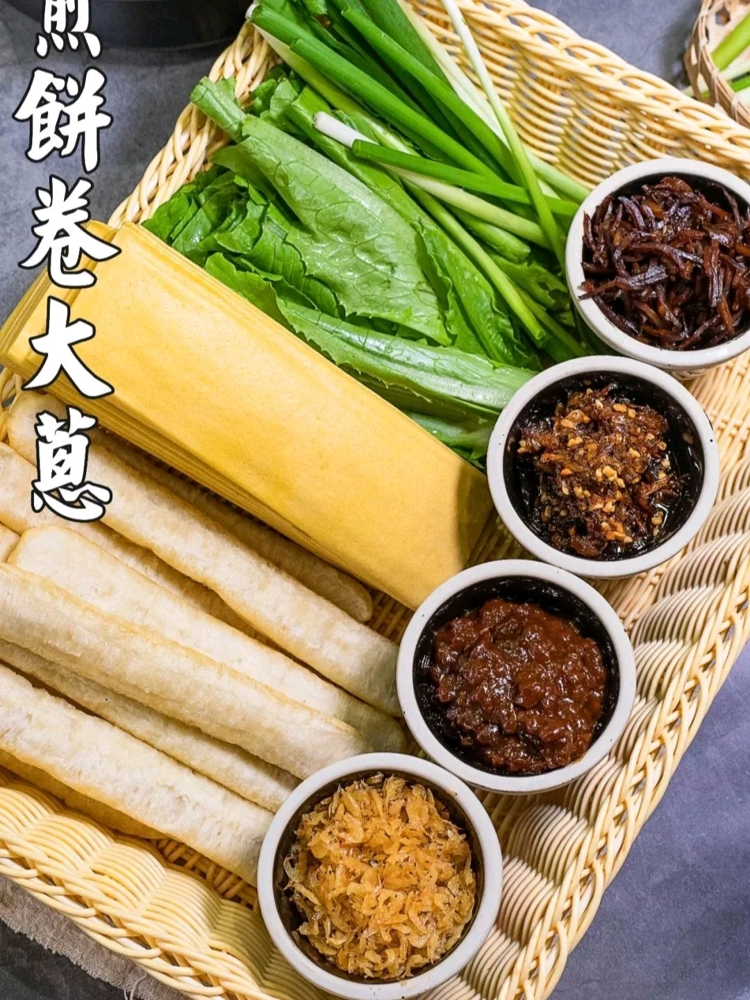
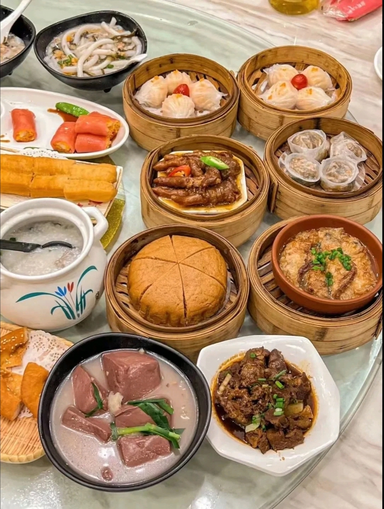
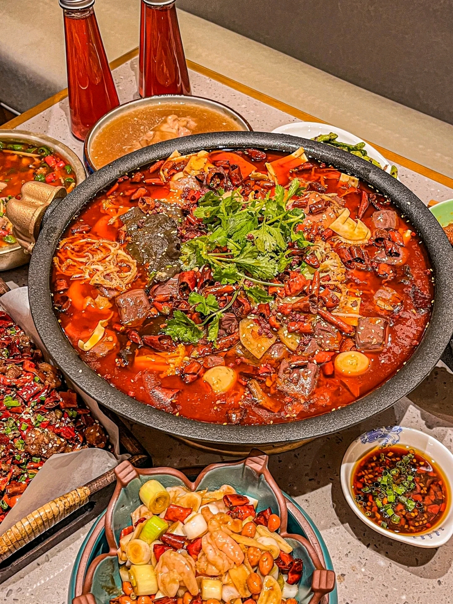

传统美食

名称：鲁菜
属地：山东
鲁菜
八大菜系之首当推鲁菜。鲁菜的形成和发展与 由山东地区的文化历史、地理环境、经济条件 和习俗尚好有关。
山东是我国古文化发祥地之 一。地处黄河下游，气候温和，胶东半岛突出 于渤海和黄海之间。境内山川纵横，河湖交错, 沃野千里，物产丰富，交通便利，文化发达。 粮食产量居全国第三位；蔬菜种类繁多，品质优良，是号称“世界三大菜园”之一。
如胶州大白菜、章邱大葱、苍山大蒜、莱芜生姜都蜚声海内外。
鲁菜特色
鲁菜讲究原料质地优良，以盐提鲜，以汤壮鲜，调味讲求咸鲜纯正，突出本味。
大葱为山东特产，多数菜肴要要用葱姜蒜来增香提味，炒、熘、爆、扒、烧等方法都要用葱，
尤其是葱烧类的菜肴，更是以拥有浓郁的葱香为佳，如葱烧海参、葱烧蹄筋；喂馅、爆锅、凉拌都少不了葱姜蒜。
海鲜类量多质优，异腥味较轻，鲜活者讲究原汁原味，虾、蟹、贝、蛤，多用姜醋佐食；燕窝、鱼翅、海参、干鲍、鱼皮、鱼骨等高档原料，质优味寡，必用高汤提鲜。
鲁菜的突出烹调方法为爆、扒、 拔丝，尤其是爆、扒素为世人所称道。
爆，分为油爆、酱爆、芫爆、葱爆、汤爆、火爆等，“烹饪之道，如火中取宝。不及则生，稍过则老，争之于俄顷，失之于须臾”。
爆的技法充分体现了鲁菜在用火上的功夫。因此，世人称之为“食在中国，火在山东”。

粤菜
起源地：中原
粤菜
粤菜中的广府菜集顺德、南海、番禺、东莞、香山、四邑、宝安等地方风味的特色，
兼京、苏、淮、杭等外省菜以及西菜之所长，融为一体，自成一家。
粤菜取百家之长，用料广博，选料珍奇，配料精巧，善于在模仿中创新，依食客喜好而烹制。
烹调技艺多样善变，用料奇异广博。在烹调上以炒、爆为主，兼有烩、煎、烤，讲究清而不淡，鲜而不俗，嫩而不生，油而不腻，
有“五滋”(香、松、软、肥、浓)、“六味”(酸、甜、苦、辣、咸、鲜)之说。时令性强，夏秋尚清淡，冬春求浓郁。
代表菜品：广府菜
著名的广府菜有：白切鸡、烧鹅、烤乳猪、红烧乳鸽、蜜汁叉烧、脆皮烧肉、上汤焗龙虾、清蒸东星斑、阿一鲍鱼、
鲍汁扣辽参、白灼象拔蚌、椒盐濑尿虾、蒜香骨、白灼虾、椰汁冰糖燕窝、木瓜炖雪蛤、干炒牛河、广东早茶、老火靓汤、
罗汉斋、广州文昌鸡、煲仔饭、支竹羊腩煲、萝卜牛腩煲、广式烧填鸭、豉汁蒸排骨、鱼头豆腐汤、菠萝咕噜肉、蚝油生菜、
豆豉鲮鱼油麦菜、上汤娃娃菜、盐水菜心、鱼腐、香煎芙蓉蛋、鼎湖上素、烟筒白菜、鱼香茄子煲、太爷鸡、赛螃蟹、香芋扣肉、
南乳粗斋煲、龙虾烩鲍鱼、米网榴莲虾、菜胆炖鱼翅、麒麟鲈鱼、姜葱焗肉蟹、玫瑰豉油鸡、牛三星、牛杂、布拉肠粉、虾饺、猪肠粉、
云吞面、及第粥、艇仔粥、荷叶包饭、碗仔翅、流沙包、猪脚姜、糯米鸡、钵仔糕等。

川菜
本土川菜:
上河/下河/小河帮
海派川菜
川菜
四川菜系，分为以川西成都、乐山为中心的上河帮，川南自贡、内江、泸州、宜宾为代表的小河帮，川东重庆、万州、达州为中心的下河帮。
川菜风味包括成都、重庆、乐山、自贡、泸州、宜宾、南充等地方菜的特色，主要特点在于味型多样，即复合味的运用。辣椒、胡椒、花椒、豆瓣酱等是主要调味品，不同的配比，配出了麻辣、酸辣、椒麻、麻酱、蒜泥、芥末、红油、糖醋、鱼香、怪味等各种味型，无不厚实醇浓，具有“一菜一格”、“百菜百味”的特殊风味，各式菜点无不脍炙人口。川菜在烹调方法上，有炒、煎、干烧、炸、熏、泡、炖、焖、烩、贴、爆等三十八种之多。
在口味上特别讲究色、香、味、形、兼有南北之长，以味的多、广、厚著称。历来有"七味"（甜、酸、麻、辣、苦、香、咸），八滋（干烧、酸、辣、鱼香、干煸、怪味、椒麻、红油）之说。
川菜系因此具有取材广泛、调味多样、菜式适应性强三个特征。由筵席菜、大众便餐菜、家常菜、三蒸九扣菜、风味小吃等五个大类组成一个完整的风味体系。
经典菜品
最负盛名的菜肴有：干烧岩鲤、干烧桂鱼、鱼香肉丝、廖排骨、怪味鸡、宫保鸡丁、五香卤排骨、粉蒸牛肉、麻婆豆腐、
毛肚火锅、干煽牛肉丝、灯影牛肉、担担面、赖汤圆、龙抄手等；川菜中六大名菜是：鱼香肉丝、宫保鸡丁、夫妻肺片、麻婆豆腐、回锅肉、东坡肘子、开水白菜等。

.png)

.png)